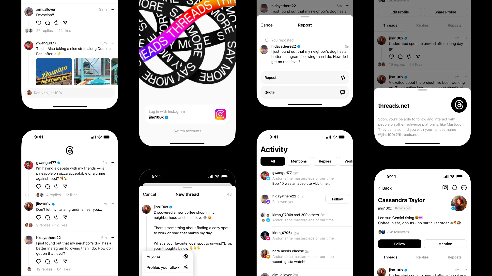
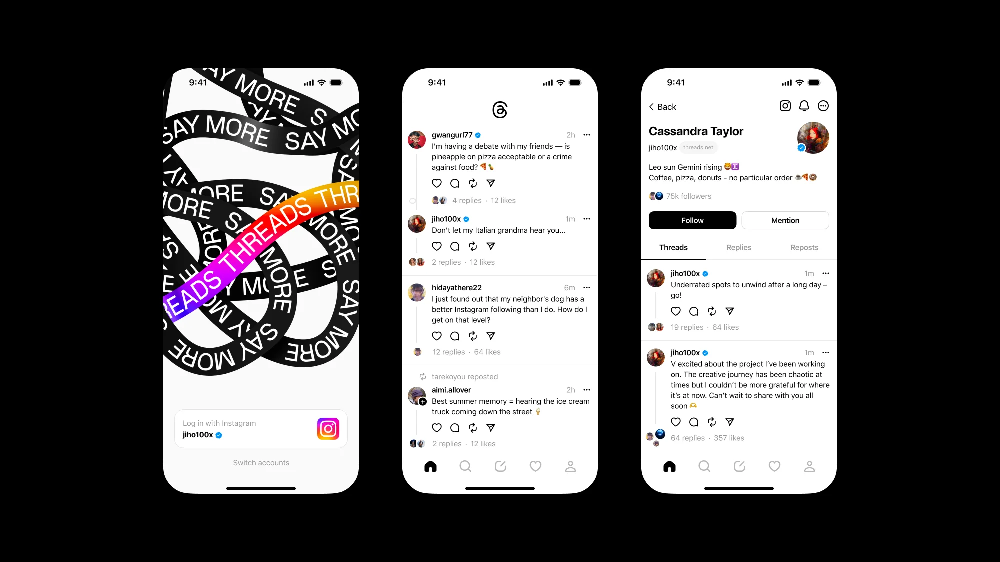
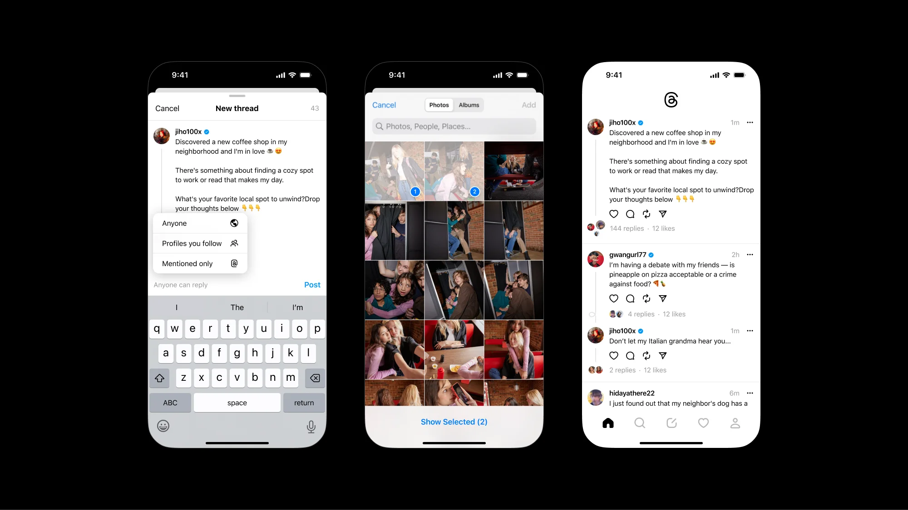
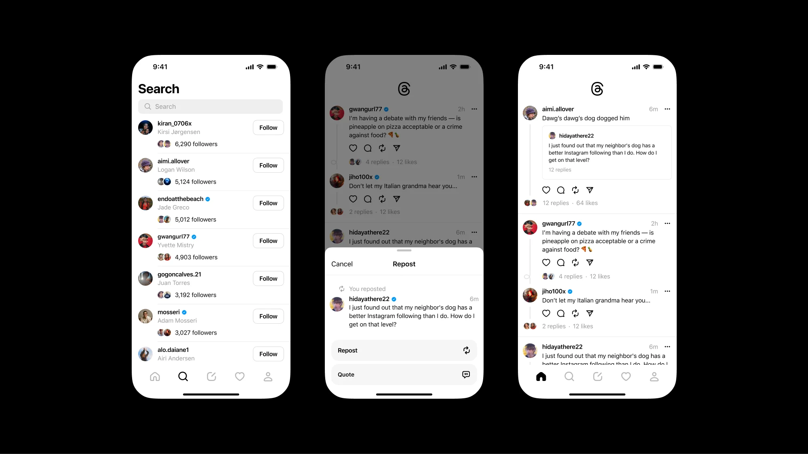
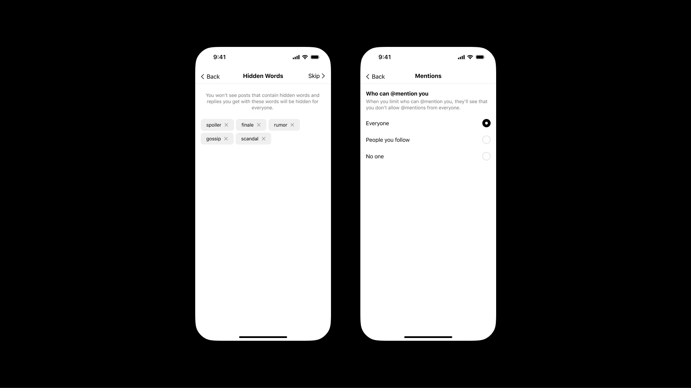

Introducing Threads: A New
Way to Share with Text

Mark Zuckerberg just announced the initial version of Threads, an app built
TAKEAWAYS:
- Threads is a new app, built by the Instagram team, for sharing text
updates and joining public conversations. - You log in using your Instagram account and posts can be up to 500
characters long and include links, photos, and videos up to 5 minutes in
length. - We’re working on Threads soon being compatible with the open,
interoperable social networks that we believe can shape the future of
the internet
Mark Zuckerberg just announced the initial version of Threads, an app built
by the Instagram team for sharing with text. Whether you’re a creator or a
casual poster, Threads offers a new, separate space for real-time updates
and public conversations. We are working toward making Threads
compatible with the open, interoperable social networks that we believe can
shape the future of the internet.
Instagram is where billions of people around the world connect over photos
and videos. Our vision with Threads is to take what Instagram does best and
expand that to text, creating a positive and creative space to express your
ideas. Just like on Instagram, with Threads you can follow and connect with
friends and creators who share your interests – including the people you
follow on Instagram and beyond. And you can use our existing suite of safety
and user controls.
Join the Conversation from Instagram
It’s easy to get started with Threads: simply use your
Instagram account to log in. Your Instagram username and verification will carry over,
with the option to customize your profile specifically for Threads.

Everyone who is under 16 (or under 18 in certain countries) will
be defaulted into a private profile when they join Threads.
You can choose to follow the same accounts you do on Instagram, and
find more people who care about the same things you do.
The core accessibility features available on Instagram today, such as
screen reader support and AI-generated image descriptions, are
also enabled on Threads.

Your feed on Threads includes threads posted by people you
follow, and recommended content from new creators you haven’t
discovered yet. Posts can be up to 500 characters long and
include links, photos, and videos up to 5 minutes in length. You
can easily share a Threads post to your Instagram story, or
share your post as a link on any other platform you choose.

Tune Out the Noise
We built Threads with tools to enable positive, productive
conversations. You can control who can mention you or reply to
you within Threads. Like on Instagram, you can add hidden words
to filter out replies to your threads that contain specific words.
You can unfollow, block, restrict or report a profile on Threads by
tapping the three-dot menu, and any accounts you’ve blocked on
Instagram will automatically be blocked on Threads.
As with all our products, we’re taking safety seriously, and we’ll
enforce Instagram’s Community Guidelines on content and
interactions in the app. Since 2016 we’ve invested more than $16
billion in building up the teams and technologies needed to
protect our users, and we remain focused on advancing our
industry-leading integrity efforts and investments to protect our
community.
